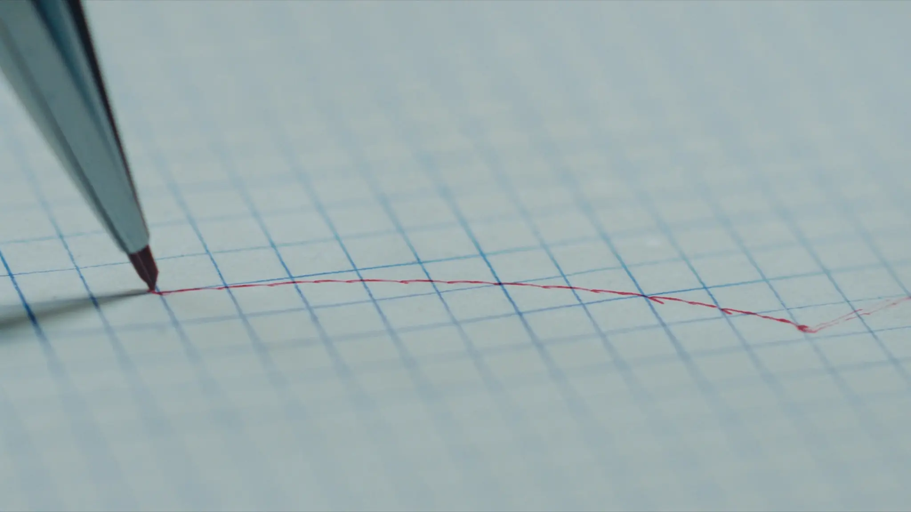

Do they come back?
Retention curves by signup cohort.
Usage analytics for product teams. Drop in one snippet and Loopwell records what people actually do, then turns the trace into answers: what holds them, what they use, where they stall.
Raw events are noise. Loopwell aggregates them into three standing instruments that update as your users move.
Retention curves by signup cohort.
Feature adoption, share of weekly sessions.
Activation funnel, first seven days.
Charts show sample data from a demonstration workspace.
One import, one call. No schema to design, no events to name up front.
import { record } from "@loopwell/browser"
record({ key: "lw_demo_2041" })
// that’s it. the pen is downLoopwell auto-captures sessions, feature use, and funnel steps as they happen.
Raw events aggregate into the standing readings above. No dashboard-building shift required.
$0 forever
$49 / month
$199 / month

This visit alone: 00:00 on the page · 0% read · 0 px of pointer travel. Imagine knowing this about your product.